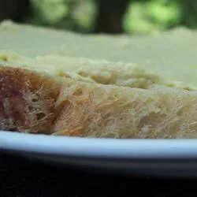

Egg butter

Description
Use this unusual egg and butter spread as a sandwich filling, or as a topping for crackers or bagels.
Ingredients
- 4 eggs
- ½ cup butter
- 1 pinch cayenne pepper
- 6 drops Worcestershire sauce
Steps
- Place the eggs into a saucepan in a single layer and fill with water to cover the eggs by 1 inch.
- Cover the saucepan and bring the water to a boil over high heat. Once the water is boiling, remove from the heat and let the eggs stand in the hot water for 15 minutes.
- Cool the eggs under cold running water. Peel, and remove yolks from white.
- Chop yolks; reserve whites for another use.
- Beat butter in a large bowl until soft and fluffy.
- Mix in the egg yolks, cayenne pepper, and Worcestershire sauce
- Beat until smooth.